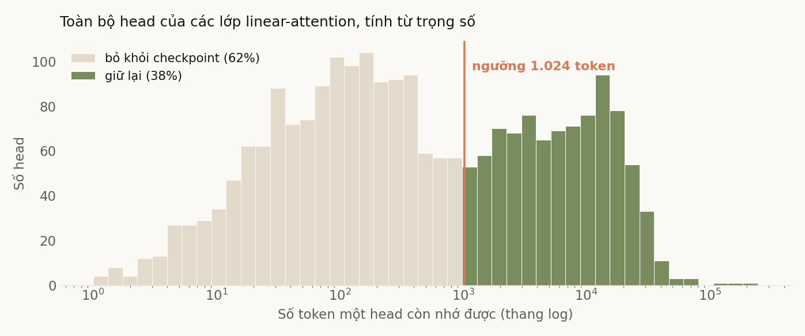
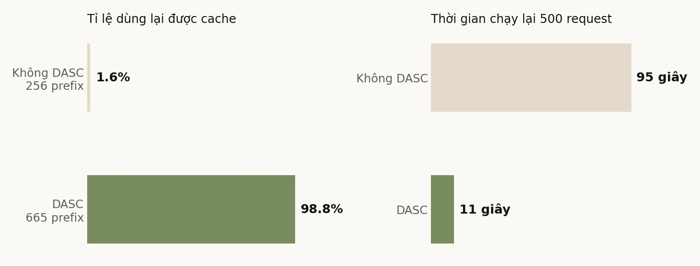

Vì sao nhớ lại một hội thoại cũ lại tốn đến thế
Khi hai request dùng chung phần đầu, engine không cần tính lại phần đó. Với model attention thông thường, việc này dễ: mỗi token có một ô riêng trong bộ nhớ, muốn dùng lại 5.000 token đầu thì lấy 5.000 ô đầu. Cắt ở đâu cũng được.
Model của chúng tôi là kiến trúc lai. Chỉ một phần tư số lớp hoạt động kiểu đó. Phần lớn còn lại là linear attention, và chúng không giữ từng token riêng lẻ. Mỗi lớp giữ một trạng thái duy nhất, bị ghi đè sau mỗi token. Tới token thứ 10.000 thì trạng thái ở token thứ 5.000 đã biến mất, không cách nào lấy lại.
Nên muốn dùng lại một đoạn đầu, engine phải chụp ảnh trạng thái của toàn bộ các lớp linear attention tại đúng mốc đó và cất đi. Mỗi ảnh khoảng 20 MB. Bộ nhớ dành cho việc cất ảnh là hữu hạn và dùng chung với chỗ của các request đang chạy, nên cất được vài trăm ảnh là hết. Ảnh thứ 501 đẩy ảnh thứ nhất ra ngoài, và hội thoại đó lần sau phải đọc lại từ đầu.
Phần lớn những gì đang cất là vô ích
Mỗi lớp có vài chục head, mỗi head giữ một mẩu trạng thái riêng. Điểm mấu chốt là các head này quên với tốc độ rất khác nhau, và tốc độ đó nằm sẵn trong trọng số chứ không phụ thuộc câu hỏi. Một head có hệ số suy giảm 0,999 thì nhớ được hàng nghìn token. Một head có hệ số 0,7 thì quên sạch sau vài chục token.
Tôi tính con số này cho toàn bộ số head của model, chỉ từ trọng số, không cần chạy một prompt nào. Trung vị là 339 token, nhưng khoảng tứ phân vị trải từ 65 tới 3.673. Chênh nhau hơn năm mươi lần.

Đó là toàn bộ ý tưởng: bỏ các head quên nhanh ra khỏi ảnh chụp, lúc nạp lại thì cho chúng bằng không. Chúng sẽ tự hồi phục sau vài chục token sinh tiếp, vì bản chất của chúng là quên nhanh. Phương pháp này lấy từ một bài tháng 8 của nhóm Meituan, tên là Decay-Aware State Compression. Tôi cài nó vào engine đang chạy và đo trên model của mình.
Bỏ 62% số head thì mỗi ảnh nhỏ đi 2,6 lần. Cùng một lượng bộ nhớ, thay vì 256 hội thoại thì cất được 665.
Có mất chất lượng không
Đây là câu phải hỏi trước, vì những head bị bỏ dù sao cũng đang giữ một phần thông tin. Tôi giấu sáu mẩu tin vào các vị trí khác nhau của một tài liệu dài, rồi hỏi lại từng mẩu ở ba độ dài ngữ cảnh, mỗi câu hỏi hai lần: lần đầu máy chưa có cache, lần sau máy dùng lại cache.
Bản có nén trả lời đúng 18 trên 18, bằng đúng bản không nén. Nhưng tôi phải nói ngay rằng phép đo này yếu, và chính bài báo gốc đã cảnh báo: phép giấu một mẩu tin là phép bão hoà, cả bản nén lẫn bản gốc đều đạt điểm tuyệt đối ở mọi ngưỡng. Chỗ họ báo có mất là phép giấu nhiều mẩu tin cùng lúc, ở ngữ cảnh 16 nghìn token, tụt từ 1,00 xuống 0,87. Tôi chưa chạy phép đó.
Nên kết luận đúng là: tôi mới loại trừ được khả năng mất nhiều, chưa loại trừ được khả năng mất ít mà đúng chỗ.
Lợi ích thì đo được rõ
Chất lượng không đổi mới chỉ là điều kiện cần. Thứ phương pháp này bán là số lượng: cùng bộ nhớ, giữ được nhiều hội thoại hơn. Lợi ích chỉ hiện ra khi chỗ cất không đủ.
Tôi dựng 500 hội thoại riêng biệt, mỗi cái khoảng bốn nghìn token, gửi hết một lượt để nạp cache rồi gửi lại lượt hai. Con số quan trọng là lượt hai: bao nhiêu phần trăm được dùng lại cache thay vì phải đọc lại. Tôi cố ý chọn độ dài sao cho phần bộ nhớ cho các lớp attention thường chỉ dùng hết 47%, tức nó không bao giờ là nút thắt. Chỉ chỗ cất ảnh quyết định.

Nhanh hơn 8,3 lần. Lượt một, lúc cả hai đều chưa có cache, hai bản chạy ngang nhau: 1,56 so với 1,60 giây mỗi request. Tức phần nhanh lên hoàn toàn đến từ việc giữ được cache, không phải từ việc model tự nhiên chạy nhanh hơn.
Con số 1,6% cần một lời giải thích, vì nó thấp hơn trực giác. Với 256 chỗ và 500 hội thoại, lẽ ra phải dùng lại được khoảng một nửa. Ra 1,6% là vì tôi gửi tuần tự từ hội thoại đầu tới hội thoại cuối, đúng trường hợp xấu nhất của chính sách thay thế theo thứ tự truy cập: request đầu tiên không có cache và đẩy luôn hội thoại thứ 244 ra ngoài, nên tới lượt nó thì nó đã mất. Nếu truy cập ngẫu nhiên, bản không nén sẽ đạt khoảng 51%.
Bài học đúng không phải con số 8,3 lần, mà là hình dạng của nó. Đây là một vách đá chứ không phải một độ dốc: tập hội thoại đang dùng mà vừa chỗ cất thì gần như dùng lại được hết, không vừa thì tuỳ mẫu truy cập mà rơi từ 51% xuống gần không. Thứ phương pháp này thực sự bán là xác suất vừa chỗ.
Ba thứ chặn đường, không cái nào nằm trong bài báo
Phần thuật toán là phần dễ nhất. Ba thứ tốn thời gian nhất đều là chuyện hạ tầng.
Thứ nhất, engine đã nối sẵn gần hết đường đi mà không ai bật. Đọc mã nguồn thì thấy nhánh cache mới đã gọi đúng chỗ lưu và đúng chỗ nạp cho bộ nhớ nén, chỉ có điều cái bể chứa bị gán cứng bằng rỗng. Thiếu đúng một dòng khởi tạo. Đổi lại, khi bật lên thì lộ ra một cái bẫy: bể chứa mới nhận số hiệu ô nhớ dạng ảo, còn kho bên dưới chỉ hiểu số hiệu vật lý, nên phải dịch ở hai chỗ gọi. Không dịch thì trạng thái được ghi vào nhầm ô, và không có gì báo lỗi cả.
Thứ hai, image đã chạm trần số lớp. Dòng image nội bộ của chúng tôi được vá chồng lên nhau hàng chục lần và đã tới 125 lớp, đúng trần mà registry chịu được. Bản vá của tôi thêm một lớp nữa thành 126, và thế là hỏng: build thì qua, nhưng tạo container thì báo vượt độ sâu, còn pipeline đưa image lên cụm thì kéo được bốn phút rưỡi rồi chết. Tôi phải quay về đúng image cha và gộp toàn bộ thay đổi vào một lớp duy nhất.
Thứ ba, bể chứa mới không nằm trong sổ sách bộ nhớ. Nó được cấp từ phần dư, mà cấu hình đang chạy gần như không chừa phần dư nào. Mặc định nó xin gấp đôi bể đang dùng, và với model này thì con số đó là 21 GB xin từ chỗ trống bằng không. Server chết ngay lúc khởi động, ở bước dựng đồ thị tính toán. Phải tự đặt cỡ và nới chỗ trống ra thì mới lên được.
Có một lỗi nữa là của riêng tôi. Lúc dò xem trần số lớp nằm ở đâu, tôi dùng lệnh xuất image ra file rồi ngắt giữa chừng. Tiến trình nền chạy bằng quyền quản trị nên không dừng theo, nó ghi tiếp 22 GB vào ổ đĩa cho tới khi máy đầy. Đáng lẽ chỉ cần một lệnh đọc siêu dữ liệu là ra ngay con số cần, không phải đọc một byte nào.
Còn thiếu gì
Phép đo tải của tôi là tải tổng hợp: 500 hội thoại do tôi sinh ra, không trùng nhau, truy cập tuần tự. Traffic thật không giống vậy. Câu chưa trả lời được là tập hội thoại đang dùng của các sản phẩm thật có vừa 256 chỗ hay không. Nếu vốn đã vừa thì phương pháp này không mua thêm gì cả.
Ngoài ra, trong cả hai lần đo tôi đều để bật một cơ chế sẵn có khác, vốn chạy lại một đoạn ngắn trước mốc cache. Mà những head bị bỏ lại chính là loại hồi phục sau vài chục token. Rất có thể cơ chế kia đang vá lại đúng chỗ tôi vừa đục ra, và như vậy thì con số 18 trên 18 là công của cả cặp chứ không riêng phương pháp này. Chưa tách bạch được.
Tóm lại
Với cùng một lượng bộ nhớ, engine giữ được gấp 2,6 lần số hội thoại, và trong tình huống chỗ cất không đủ thì lượt truy cập lại nhanh hơn 8,3 lần. Chất lượng truy hồi không đổi trong phạm vi phép đo đã chạy, và tôi đã nói rõ phép đo ấy còn thiếu chỗ nào.
Điều đáng mang đi không phải con số. Phần lớn những gì một hệ thống đang cất giữ có thể là vô ích, và đôi khi biết được cái nào vô ích chỉ cần đọc trọng số chứ không cần chạy thử. Chỗ khó nằm ở ba tầng hạ tầng bên dưới, nơi không có bài báo nào viết sẵn cho bạn.